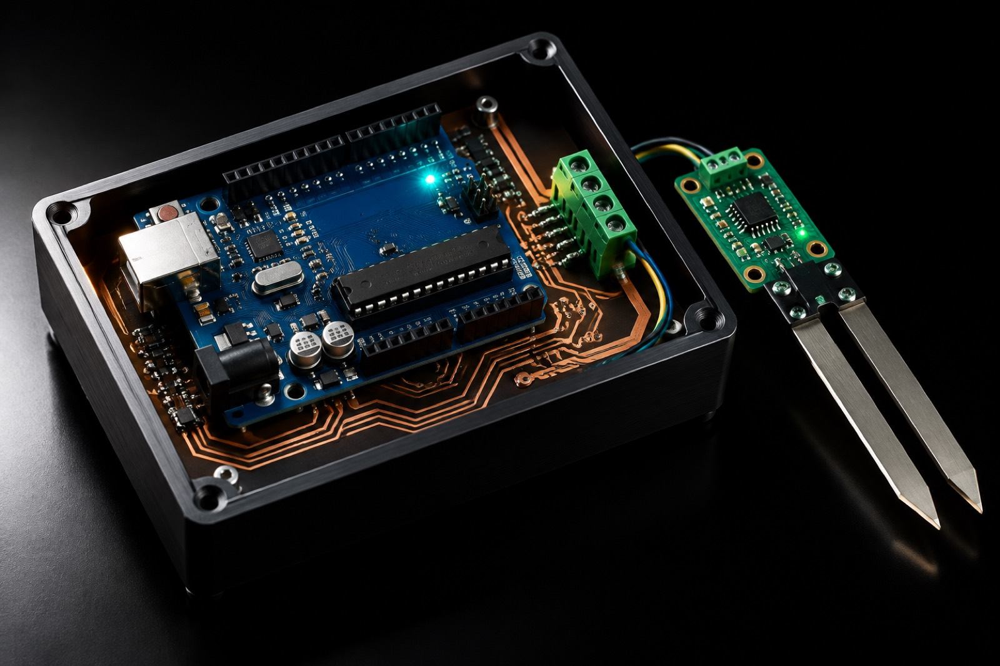

BNO085 9-DOF IMU
Heading reference
Provides orientation feedback so straight-line travel and 90° turns do not depend on GPS.
02 · Technology
How the rover assigns a crop to every cell, decides whether to treat, and which hardware carries the decision from soil to dashboard.
04Intelligent operating modes
A real field is rarely one crop in one pattern. The rover resolves a crop profile from the grid coordinate it is standing on, using whichever assignment the farmer selected for that mission.
One crop profile applied across every cell of the field.
The field is treated as a single crop block. Every sampling location uses the same threshold set, so the rover behaves like a conventional precision probe — but still stops and measures each cell instead of assuming the field is uniform.
Field map · 6 × 6
Hover a cell
Grid coordinates are how the rover knows which crop profile applies before it evaluates a reading.
Field maps are illustrative. Up to three crop profiles can be configured per mission.
Two crops alternating column by column across the field.
Every other column carries the second crop. The rover still traverses the same serpentine grid, but the profile it evaluates against changes as it crosses from one column to the next.
Field map · 6 × 6
Hover a cell
Field maps are illustrative. Up to three crop profiles can be configured per mission.
Two crop columns, then two of the other, repeating across the field.
Wider strips give machinery room to move while keeping two requirement sets active in the same mission. Each strip keeps its own profile, so a treatment boundary follows the crop boundary rather than the field edge.
Field map · 6 × 6
Hover a cell
Field maps are illustrative. Up to three crop profiles can be configured per mission.
The farmer defines which points are sampled and which crop applies at each one.
For irregular plantings, trial plots or a field where crops were changed mid-season, a coordinate list replaces the repeating pattern. Each defined point carries its own profile assignment.
Field map · 6 × 6
Hover a cell
Field maps are illustrative. Up to three crop profiles can be configured per mission.
05How the rover prevents waste
Nutrient demand is crop-specific. A nitrogen reading that starves maize is sufficient for a legume in the next column. The rover holds that difference in software instead of averaging it away.
Per-cell decision sequence
Scope of intervention
The rover performs precision nutrient application. It does not control the field's irrigation infrastructure. Zone-aware logic identifies sprinkler and infrastructure cells so they are excluded from inappropriate treatment — the same coordinate layer could support targeted irrigation in future work.
Fertilizer reduction is not presented as a water saving. Any water benefit would require separate measurement.
Illustrative treatment log
Sample values
A-02/ Maize
Below minimum — sprayer armed for this cell.
A-03/ Maize
Above minimum — cell left untouched.
B-04/ Bean
Same reading, different crop — no deficiency for the bean profile.
Thresholds are user-configured per crop profile. Values shown are illustrative, not trial results.
Same field · after one mission
08
Treated · deficit confirmed
26
Untouched · no action
02
Excluded · sprinkler zone
Before: every cell received the same blanket pass. After: only cells with a confirmed deficit were treated, and the two irrigation-infrastructure cells were excluded by zone logic.
Illustrative field model — not a measured trial result
06System architecture
Motion and sensing run on the Arduino UNO R3, where timing matters. Connectivity runs on the ESP32, where a dropped packet matters less than a missed motor step. Neither task can stall the other.
Highlight
Motion · sensing · local decision
Arduino UNO R3 — edge control
crop-profile comparison
BNO085 IMU
9-DOF heading
Probe servo
deploy / hold
N20 motors
via motor driver
DHT11
air temp · RH
RS485 6-in-1 probe
soil via MAX485
Sprayer
relay + nozzle
Wi-Fi · Blynk · telemetry
ESP32 — connectivity
datastreams · V-pins
Wi-Fi
2.4 GHz
Blynk cloud
virtual pins
Farmer dashboard
phone · browser
Blynk Cloud
datastreams · V-pins
Farmer dashboard
phone · browser
Optional NEO-M8N GPS
position logging only — navigation stays IMU-based
Soil sensor data reaches the Arduino through MAX485 RS485 conversion.
Component register
BNO085 9-DOF IMU
Provides orientation feedback so straight-line travel and 90° turns do not depend on GPS.
RS485 6-in-1 soil sensor
One probe reports moisture, temperature, pH, nitrogen, phosphorus and potassium over a noise-resistant industrial bus.
MAX485 interface
Translates the sensor's RS485 differential signalling to the Arduino's serial pins.
DHT11 sensor
Air temperature and humidity sit alongside soil data in the telemetry record.
Servo-controlled probe
Drives the sensor to a repeatable depth instead of relying on the operator's hand.
N20 geared motors
Compact, high-torque drives matched to slow, precise row-speed movement.
Motor driver
Gives the Arduino independent, direction-controlled drive for each side.
Onboard sprayer
A relay-switched pump and nozzle allow a treatment to be applied at the moment of decision.
ESP32
Offloads Wi-Fi, Blynk and telemetry from the motion controller so loop timing is unaffected.
NEO-M8N GPS
Records position for mapping and review. It is not used for live navigation.
Acronyms
07Crop intelligence
Up to three crop profiles can be configured per mission. Each carries the crop's name and minimum values for moisture, pH, nitrogen, phosphorus and potassium. At every cell, the rover loads the matching profile and evaluates the reading against it.
Profile P1 · Tomato
Sample readings
Heavy feeding, sensitive to moisture swings in the root zone.
N · Nitrogen
Below minimum
P · Phosphorus
Sufficient
K · Potassium
Sufficient
Soil moisture · monitored
27 % / min 35 %
Below range — recorded
Soil pH · monitored
6.6 / 6–7
Within range
How a profile is used
Decision · 1 of 3 nutrient minimums are not met for tomato — the sprayer is activated for this cell.
Illustrative values. Moisture and pH are recorded and reported, not sprayed against.
Bar length shows the measured value; the vertical tick marks the configured minimum. All values are illustrative.
This is a rule-based threshold system — not machine learning or autonomous agronomic advice.
Profile P2 · Maize
Sample readings
High nitrogen demand through vegetative growth.
N · Nitrogen
Sufficient
P · Phosphorus
Sufficient
K · Potassium
Sufficient
Soil moisture · monitored
31 % / min 32 %
At threshold — recorded
Soil pH · monitored
6.5 / 5.8–7
Within range
How a profile is used
Decision · No nutrient minimum is missed for maize — the rover moves on without spraying.
Illustrative values. Moisture and pH are recorded and reported, not sprayed against.
Bar length shows the measured value; the vertical tick marks the configured minimum. All values are illustrative.
This is a rule-based threshold system — not machine learning or autonomous agronomic advice.
Profile P3 · Bean
Sample readings
Legume — fixes its own nitrogen, so the threshold is far lower.
N · Nitrogen
Sufficient
P · Phosphorus
Below minimum
K · Potassium
Sufficient
Soil moisture · monitored
33 % / min 28 %
Within range
Soil pH · monitored
6.9 / 6–7.5
Within range
How a profile is used
Decision · 1 of 3 nutrient minimums is not met for bean — phosphorus is armed for this cell.
Illustrative values. Moisture and pH are recorded and reported, not sprayed against.
Bar length shows the measured value; the vertical tick marks the configured minimum. All values are illustrative.
This is a rule-based threshold system — not machine learning or autonomous agronomic advice.
10Hardware & engineering
The prototype is built from accessible, well-understood parts. What matters is how they are arranged: sensing is repeatable, timing is protected, and decisions stay local.

Reliability decisions
Heading comes from the IMU rather than an assumed motor timing, so small wheel-slip errors are corrected during the row instead of being discovered at the end.
The correction term is bounded. A sudden large heading error produces a measured response rather than a motor spike that overshoots the line.
Drive is briefly reversed to arrest momentum at each cell, so the probe descends at the same relative position every time.
The servo holds its position under load rather than driving open-loop, keeping the sensor at depth while the reading settles.
Replacing a hand-held probe with a repeatable actuator removes operator variation from the measurement itself.
Differential signalling is far more tolerant of motor noise than a short analog line, which matters on a moving chassis with two controllers.
Wi-Fi stack behaviour cannot stall the motor loop. The ESP32 can drop a packet without the rover missing a turn.
Known limits: row-spacing calibration and long-row drift are still being improved. No claim is made that the prototype is field-proven beyond the competition environment.
Four pages · one system